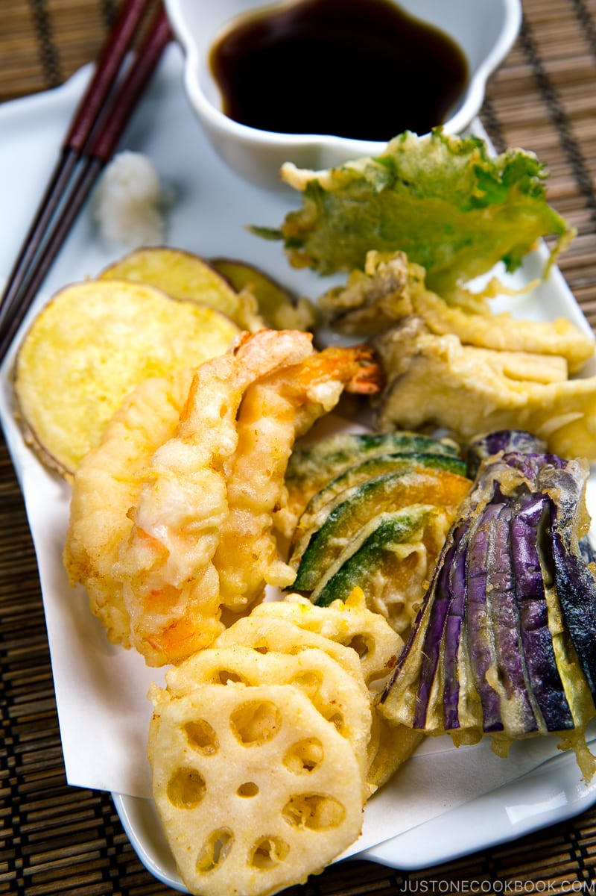

Tempura

Description
Learn how to make perfect Tempura at home with this easy-to-follow recipe. You‘ll find plenty of helpful tips and tricks for making the crispy deep-fried batter and delicious dipping sauce. Consider this your ultimate tempura-making guide!
Ingredients
- ¾ cup dashi (Japanese soup stock) (use standard Awase Dashi, dashi packet or powder, or Vegan Dashi)
- 3 Tbsp soy sauce
- 2 Tbsp mirin
- 2 tsp sugar
- 4 shrimp (peeled with tail and last shell segment left on; deveined)
- 2 king oyster mushrooms (eringi)
- 4 slices lotus root (renkon) (peeled and precooked; I used boiled lotus root (renkon no mizuni) from a Japanese grocery store)
- 4 slices Japanese sweet potato (Satsumaimo) (unpeeled)
- 4 slices kabocha squash (unpeeled)
- 1 Japanese or Chinese eggplant
- 2 shiso leaves (perilla/ooba)
- 1 large egg (50 g each w/o shell) (chilled)
- 200 ml iced water (¾ cup + 4 tsp)
- 1 cup all-purpose flour (plain flour) (chilled; weigh your flour or use the “fluff and sprinkle“ method and level it off)
- neutral oil (or use a 10-to-1 ratio of neutral oil to sesame oil)
- 2 Tbsp all-purpose flour (plain flour) (for dusting)
- 2 inches daikon radish (grated)
Steps
- Combine ¾ cup dashi (Japanese soup stock), 3 Tbsp soy sauce, 2 Tbsp mirin, and 2 tsp sugar in a small saucepan and bring it to a boil. Then, lower the heat and let it simmer until the sugar is completely dissolved. Remove from the heat and set aside.
- Peel 4 shrimp, leaving on the tail and last shell segment (closest to the tail). Straighten the shrimp so it looks gorgeous; learn how in my post on how to prepare shrimp. Pat dry to completely remove the moisture.
- Cut 2 king oyster mushrooms (eringi), 4 slices lotus root (renkon), 4 slices Japanese sweet potato (Satsumaimo), and 4 slices kabocha squash each about ¼ inch (6 mm) thick. For the 1 Japanese or Chinese eggplant, cut off and discard the stem and calyx, then cut in half lengthwise. Place the halves flat side down on the cutting board and cut lengthwise into very thin slices (⅛ inch or 3 mm), leaving 1 inch (2.5 cm) of the bottom tip intact so the slices stay connected. Then, gently press down to fan out the slices. Keep the 2 shiso leaves (perilla/ooba) whole.
- In a medium-sized pot, heat 1½–2 inches (3–5 cm) of neutral oil to 350°F (180°C).
- While the oil is heating up, prepare the tempura batter. We‘ll use a 1-to-1 ratio (by volume) of flour to egg + water. First, add 1 large egg (50 g each w/o shell) and 200 ml iced water into a measuring cup or a bowl. Whisk the egg mixture vigorously. Discard the foam on the surface.
- Sift 1 cup all-purpose flour (plain flour) into a large bowl. Slowly pour the egg mixture into the flour and mix. Do not overmix; it’s okay to leave some lumps.
- Deep-Fry the Tempura.
- Peel and grate 2 inches daikon radish (I use a ceramic grater) and gently squeeze out some of the liquid. Prepare 3–4 Tbsp of warm tentsuyu in each individual dipping bowl with 1 Tbsp grated daikon per serving on the side.
- Add the grated daikon to the dipping sauce, then dip the Tempura in the sauce to enjoy.
Link to original Recipe
Home